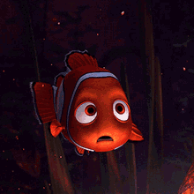

Nemo é um peixinho-palhaço que vive no oceano com seu pai, Marlin. Ele nasceu com uma nadadeira menor, o que faz seu pai ser superprotetor. Ao tentar mostrar que é capaz, Nemo acaba sendo capturado por mergulhadores e levado para um aquário em um consultório de dentista.
Enquanto Nemo tenta bolar planos para fugir com a ajuda de outros peixes do aquário, Marlin cruza o oceano para resgatar o filho, vivendo aventuras e fazendo amizade com Dory, uma peixinha esquecida. No final, pai e filho aprendem lições de confiança, coragem e independência.
 Voltar